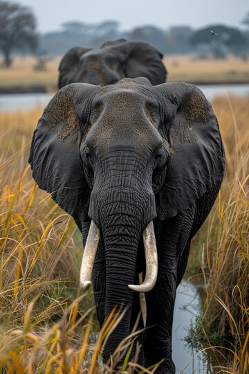

TODO SOBRE LOS ELEFANTES

1.Caracteristicas Generales
Los elefantes son mamíferos terrestres de gran tamaño, con una serie de características únicas que los distinguen de otros animales.
A continuación, se presentan algunas de las características más destacadas de los elefantes:
- Tamaño: Los elefantes son los animales terrestres más grandes, con un peso promedio de 5.000-7.500 kg (11.000-16.500 libras)
y una altura de 3-4 metros (10-13 pies) en la cruz.
- Cerebro: El cerebro de los elefantes es el más grande de todos los animales terrestres, pesando alrededor de 5 kg (11 libras),
lo que les confiere una inteligencia comparable con la de cetáceos y primates
- Trompa:La trompa de un elefante es una prolongación flexible de la nariz, compuesta por más de 40.000 músculos,
que se utiliza para comer, beber, respirar y comunicarse.
- Colmillos: Los colmillos de los elefantes son prolongados dientes que se utilizan para proteger la trompa, levantar objetos,
recolectar alimento y remover la corteza de los árboles. También se utilizan para defenderse.
- Hábitat: Los elefantes habitan en una variedad de ambientes, incluyendo bosques tropicales, sabanas,
desiertos y montañas.
2.Especies
Existen tres especies principales de elefantes
- Elefante Africano de la Sabana(Loxodonta africana)
- Elefante Africano del bosque(Loxodonta africana)
- Elefante Asiático(Elephas maximus)
Elefante africano de la Sabana

Caracteristicas
- Gran cabeza y amplias orejas que cubren los hombros
- Trompa larga y musculosa
- Presencia de dos “colmillos” en la mandíbula superior, bien desarrollados,
en ambos sexos aunque mayores en los machos
- Habita en llanuras abiertas del África subsahariana
Entra aqui
Elefante Africano del bosque

Caracteristicas
- Es la más pequeña de las tres especies existentes de elefantes
- es el tercer animal vivo terrestre más grande.
- tener orejas más redondeadas y colmillos más rectos y apuntados
hacia abajo en comparación con el elefante africano de sabana.
Elefante Asiatico

Caracteristicas
- La cabeza es grande y abombada, con una trompa larga y musculosa que solo presenta un lóbulo en su extremo.
- Las patas delanteras tienen cinco dedos en forma de pezuña, y las patas traseras, cuatro.
- El cuello es corto, casi inexistente, y el cuerpo es grande y en forma de barril.
- Los elefantes asiáticos miden entre 2,0 y 3,5 metros de altura y pueden pesar hasta varias toneladas
Ir a Inicio
A continuación te dejo los links para que puedas buscar mas informacion acerca de estos grandes pero a la vez tiernos mamiferos:
Entra aquí
Entra aquí
Entra aquí